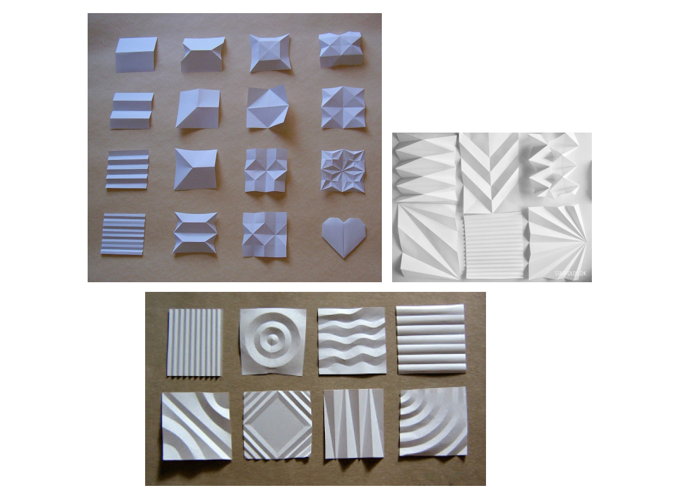
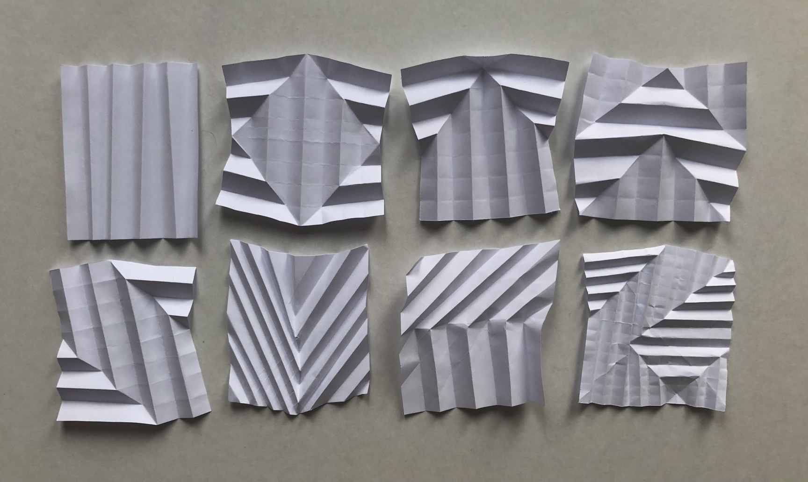
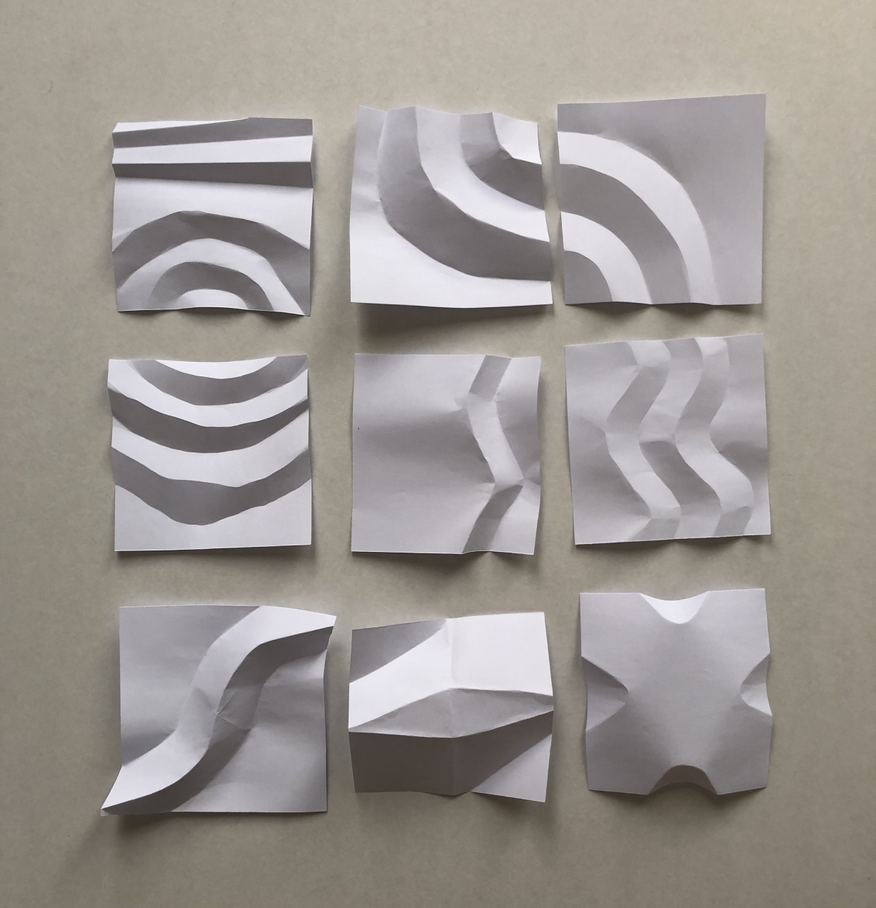
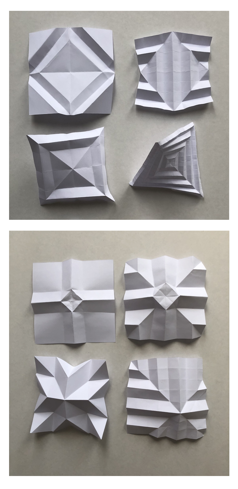
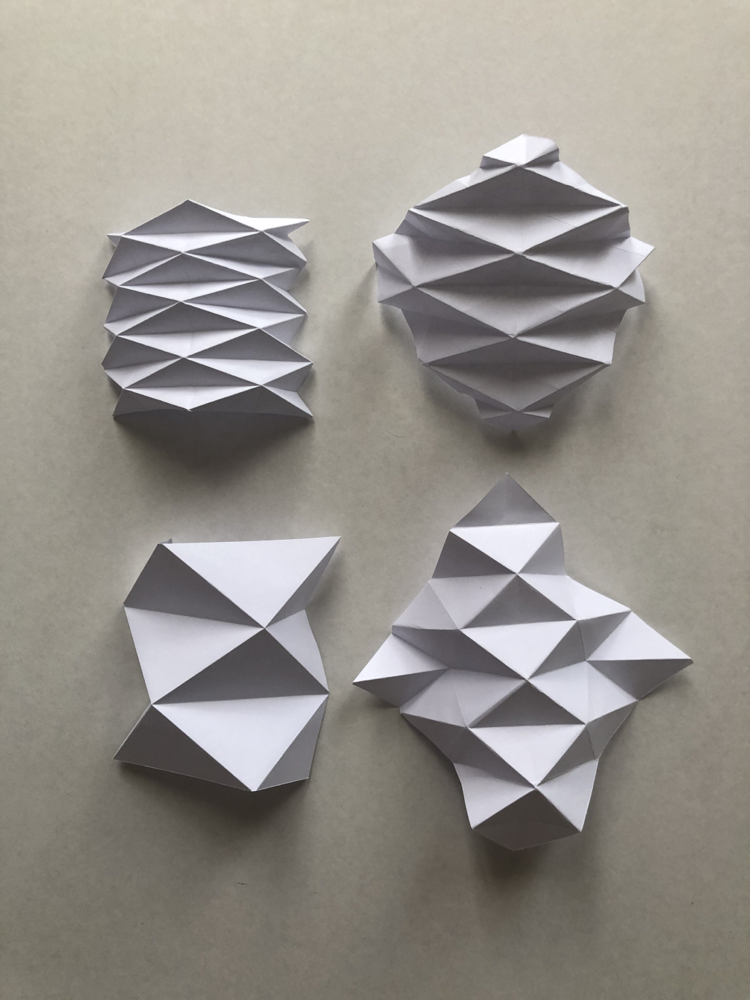
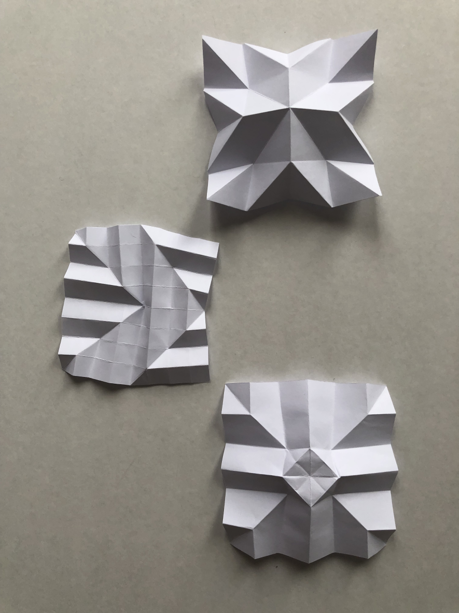
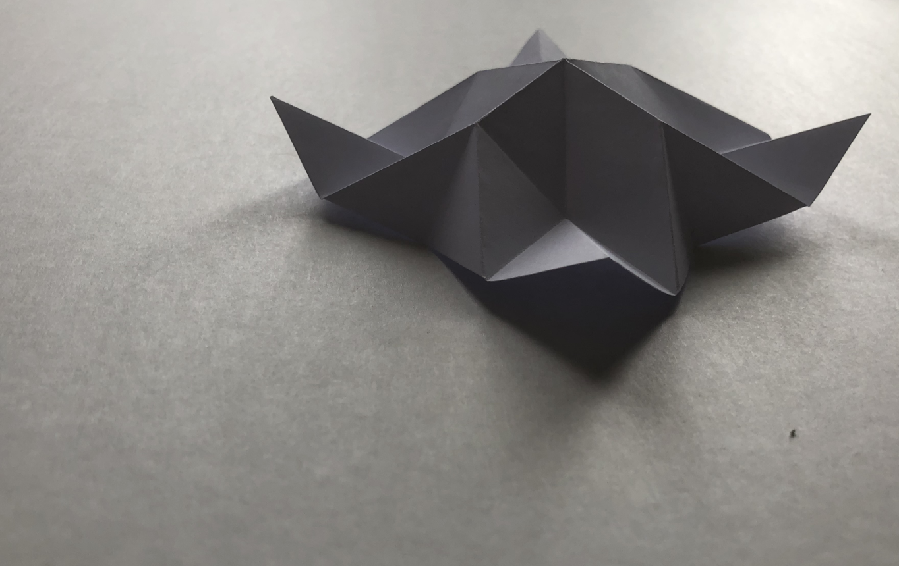
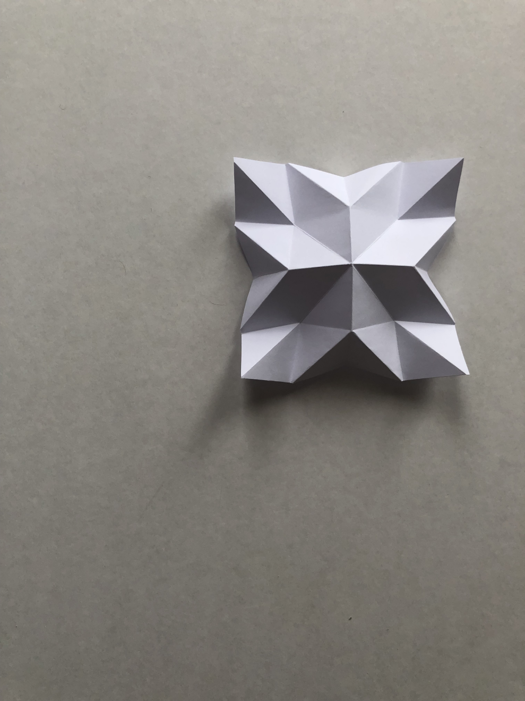
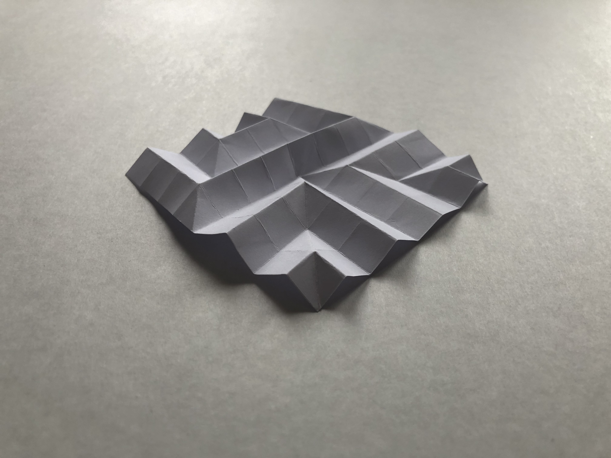

Fold and Snap
DESIGN 100
I had first started off with very basic folds that I had known from previous experience working with making origami when I was younger.
When I wanted to look for more inspiration, I looked online for some more inspiration, which helped significantly with figuring out how to do more complicated folds and what type of folds are also possible.
Some pictures here I had used as a basic reference for what type of folds I could do.

References:
https://www.flickr.com/photos/poetryinpaper/6031750305/in/photostream
http://starfolds.dk/origami/foldeteknikker-i-papir/
https://stranamasterov.ru/node/618494
I had found out that one of the ways I could make more visually interesting designs was to add more sections within the paper to allow for more folds. This would create repetitiveness of the folds, almost creating a pattern within the fold.
This also had a limit, as some of my folds were worked on for so long that the paper started to become more wrinkled and worn out with the more sections I was working with.
The following are some of the ideation I had done, with them being grouped together following some of the gestalt principles of grouping.

Here, the bottom far right fold shows how the paper became more worn out due to the small folds, so the folds on it weren't crisp, making the fold less crisp.
These folds also created geometric shapes that I found interesting, joined with the repetitiveness of the sharp lines.
This group of folds was one of my favourites to play around with, as it was easy to change little things about it, such as places where the diagonal fold is to change the direction of the fold.

This set of fold experiments focused on using curves and rounded folds. I found these folds harder to make with only my hands and found out that using a sharp edge of an object to 'draw' out the fold made it much easier to fold, and the lines created were much sharper.
I had found making the curved lines parallel with each other created a cool rippling effect, which I had found interesting.
I heavily enjoyed the organic shapes and lines created with the curved folds.


These sets on the left were grouped together with the square/diamond-like shape that can be pictured out from the folds.
With a lot of diagonal folds done on them, it creates the 'X' shape, which also links to how the folds mirror themselves.
This set on the right had a lot of repetition, which created a pattern with the folds.
I experimented with changing the direction of the folds, which also changed the direction of the paper's pattern and shape. The folds on the left are done on the same edge/direction of the paper, and the right side had them done on a diagonal.
I can also experiment with changing the number of rows, which changed the sizes and shape of the indented diamond.
These were the chosen three folds that were my favourite.

I found the top fold has one of my favourites as it has some of the sharpest/cleanest folds and lines within the paper. This was partly due to how all the folds lined up within a grid I had started with. This fold also shows a lot of geometric shapes within, which I liked.
This second one was chosen as I really liked the arrow shape produced because of the different directions of the folds and the shadows from the light source. These shapes created from the shadow make the eye focus on the arrow-like shape instead of the shapes/direction of the actual folds, making it so that this fold can be seen in many ways.
The last fold was chosen because I liked the small square seen within the centre of the fold. This also breaks up the 'X' seen within the paper. This fold was also interesting to be seen from other angles, as it puffed up a little. Again I also liked the clean lines and shadows created from the folds.
There were other folds I had also liked, such as some of the more curved folds and patterned ones. Especially with the shape that is being repeated is small.
I hadn't chosen a curved fold as I felt it was clear to see how I had made the fold, as it wasn't as clean as a straight edge. The patterned shapes would also change the shape of the paper, making it curve up or lift off the surface, which I didn't like in the context for them.
Here were some of the pictures that I liked of my top 3 folds.

Out of these I had then chosen my top 3 photos!

This picture was one of the top 3 pictures as I liked how it showed a different perspective of the fold from the side. Allowing for more of the height of the fold to be seen, such as the corners of the paper.
This picture also uses the rule of thirds with the subject in the frame.
I also found the shadows created on the surface interesting with the symmetry and mirroring.
The picture could've been improved with better lighting, changing the direction and allowing for more of the folds to be seen. If the photo had been taken further away, it could've helped as it would allow for the subject to have more space.

I liked how the composition was done of this picture, with the rule of thirds and the off-balance placement within the top right. This photo was also one of the cleanest folds and shadows from the fold. I had also found the shadows interesting on this one, from a different view, showing a smaller angle between the two main triangle-like shadows.

I had picked this picture as I liked the different perspective it gives of this fold within an image. When photographed with a single primary light source on the side, this fold creates the shadows that make up the shape. However, the shadows that help create the arrow shape can't be seen clearly on this angle. This also shows how I had folded it, which directions the folds are rather than the shape being made from your brain.
Final photograph
I picked this as my favourite out of the three pictures because it's the most visually interesting in terms of the form and shapes that can be seen with the fold.
This photo also provided a lot of interest in the fold itself, showing a different perspective.
I liked how geometric the paper looked from this angle and how it was folded. It also almost looks like this wasn't created from a square piece of paper by just folding.
This was picked over the other two as I felt this photo displayed more composition and photography techniques. It had also looked entirely different to the fold from a bird-eyes point of view which creates the change in form.